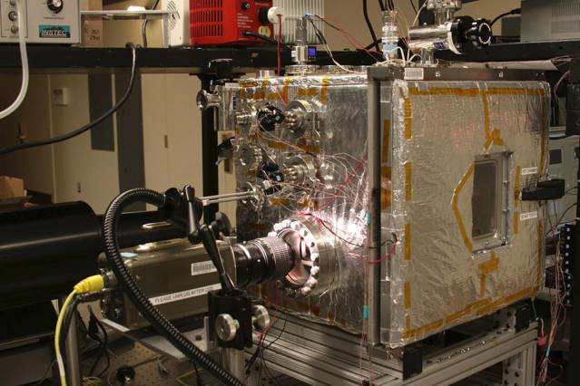

MIRAIKARAとは
MIRAIKARAとは 人工知能
人工知能 バイオ
バイオもし、もし空気中にある湿気などの水分が私たちのスマホを充電してくれたら。こんな技術があれば、私たちのもつ電化製品は常にフルＭＡＸという世界が訪れるかもしれない。
Image by morgueFile
MITの科学者Nenad Miljkovic氏とその同僚が発見したのは、水のしずくは強い防水加工を為された表面に弾かれジャンプしている状態において発電するという現象、そしてそれらの電力はモバイルデバイスに応用できるという事だ。

Image by MIT News | MITの研究室に置かれている実験用棺、左側にあるカメラから棺の中を観察している
気になる発電量だが、実験段階では極めて少ない。1平方センチメートルで15ピコワットというあまり想像できない量だ。しかしMiljkovic氏によるとこれはすぐにでも最低1ミクロワットにまで引き上げることが可能だそうだ。
この量ならば、おおよそ一面50平方センチメートルの箱で12時間かけてスマホをフルマックスにできる計算になるらしい。
Image by morgueFile
例えばビル一面にこのシステムを使ってみたり、家にソーラーパネルとこれも一緒に付けるなどの使い方をすれば、常に身の回りにある水分が勝手に電気を発電してくれるという寸法である。
イノベーティブな発電方法が変える世界に注目が集まる。
Source:Can These Water Droplets Power Our Smartphones?
Top Image by:morgueFile